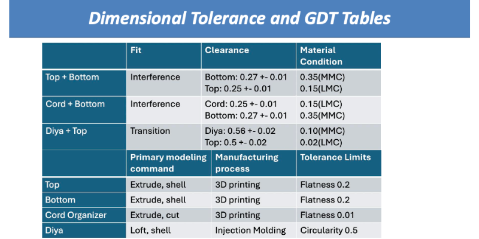

RickStation: Cultural-Inspired Desk Organizer

Project Overview
RickStation is a creative ideation design project developed for ME 1670. The product combines a cord organizer and jewelry holder within a decorative desk accessory inspired by Indian cultural elements.
Design Inspiration
The form factor is inspired by the Indian rickshaw: a vibrant street vehicle common throughout India. To incorporate additional cultural symbolism, I integrated a detachable diya (traditional oil lamp) component, allowing the top compartment to function independently as a small storage container.
Engineering Documentation
Engineering Documentation

Image 1 of 2
- Multi-view and section drawings
- Fully dimensioned part working drawings
- GD&T and tolerance tables
- Exploded assembly view with Bill of Materials
- Step-by-step assembly instructions
Design Considerations
- Ergonomic cord routing for daily electronics use
- Detachable modular top component
- Balanced aesthetic and functional integration
- Manufacturability and assembly constraints
Final Outcome
The final rendered assembly model integrates cultural storytelling with practical mechanical design. RickStation demonstrates how creative ideation, technical documentation, and cultural inspiration can be merged into a cohesive, manufacturable product.